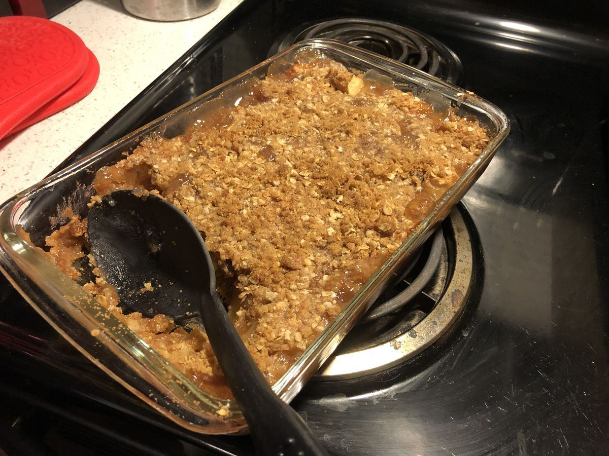

Based on https://www.tasteofhome.com/recipes/winning-apple-crisp/
Personal rating: 3 / 5

1 cup all-purpose flour
3/4 cup rolled oats
1 cup packed brown sugar
1 tsp ground cinnamon
1/2 cup butter, softened
4 cups chopped peeled apples
1 cup sugar
2 Tbsp cornstarch
1 cup water
1 tsp vanilla extract
Vanilla ice cream (optional)